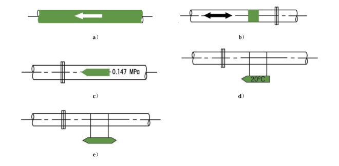
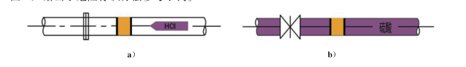

安全色和安全标志查询
依据 GB 2894-2025《安全色和安全标志》· 含 139 个图形标志 1:1 切图 · 含 8 种工业管道识别色与标识方法
红
红色 Red
传递禁止、停止或提示消防设备、设施的信息。
对比色：白色
黄
黄色 Yellow
传递注意、警告的信息。
对比色：黑色
蓝
蓝色 Blue
传递应遵守规定的指令性信息。
对比色：白色
绿
绿色 Green
传递安全的提示性信息。
对比色：白色
使用规则：黑色用于安全标志的文字、图形符号和警告标志的几何边框；白色用于安全标志中红、蓝、绿的背景色及安全标志的文字和图形符号。色品区域见 GB 2894-2025 附录 A，颜色示例见附录 B。
4.3 相间安全标记 依据 GB 2894-2025 §4.3 · 双向斜条等宽
4.3.2 黄色与黑色相间条纹
表示危险位置的安全标记。
4.3.3 红色与白色相间条纹
表示禁止或提示消防设备、设施位置的安全标记。
4.3.4 蓝色与白色相间条纹
表示传递应遵守规定的安全标记。
4.3.5 绿色与白色相间条纹
表示安全环境或安全状况的安全标记。
警告标志 (52)
禁止标志 (51)
指令标志 (25)
提示标志 (11)
型号选择器
表 D.1 标志牌尺寸（单位：米）
观察距离 L 与各形状标志尺寸的对应关系。允许 3% 误差。
| 型号 | 观察距离 L (m) | 三角形外边长 b （警告标志） | 圆形外径 d （禁止/指令标志） | 正方形边长 a （提示标志） |
|---|
表 D.2 标志牌型号与适用场所
| 型号 | 适用场所和位置 |
|---|
提示：多个安全标志牌在同一部位设置时，应按警告→禁止→指令→提示顺序，先左后右、先上后下排列。
表 2 八种基本识别色（GB 2894-2025 §8.1.1）
§8.1.2 基本识别色标识方法（a-e 共 5 种）
a) 在管道全长上标识
b) 在管道上以宽为 150 mm 的色环标识
c) 在管道上以长方形的识别色标牌标识
d) 在管道上以带箭头的长方形识别色标牌标识（指示流向）
e) 在管道上以系挂的识别色标牌标识
采用 b)、c)、d) 或 e) 时，相邻两个标识之间的距离不应小于 10 m；标识场所应包括所有管道的起点、终点、交叉点和穿墙孔两侧等。

图 E.1 基本识别色标识方法参考示例（a 全长 / b 色环 / c 矩形标牌 / d 带箭头矩形 / e 系挂牌）
§8.2.2 危险标识方法

图 E.2 危险标识方法参考示例（a 色环+标牌 / b 流向箭头+色环）